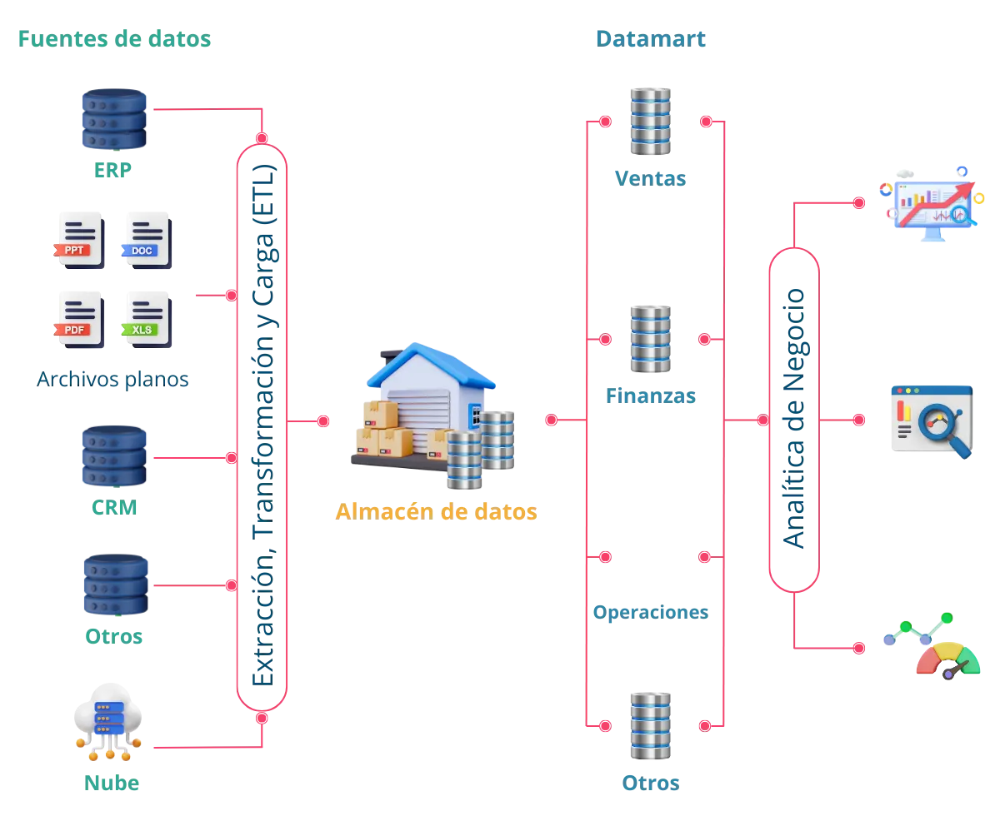
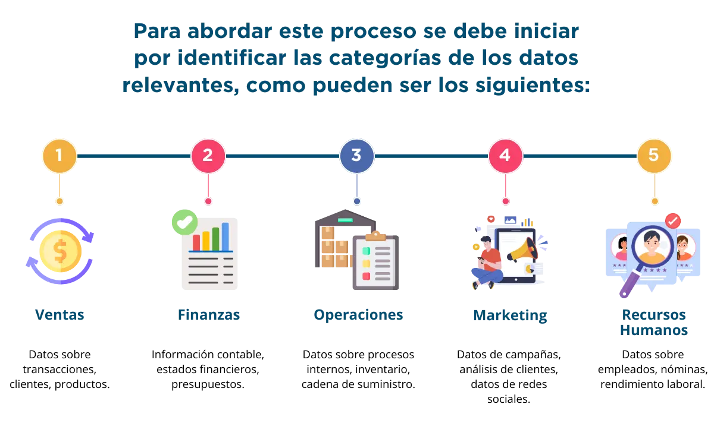
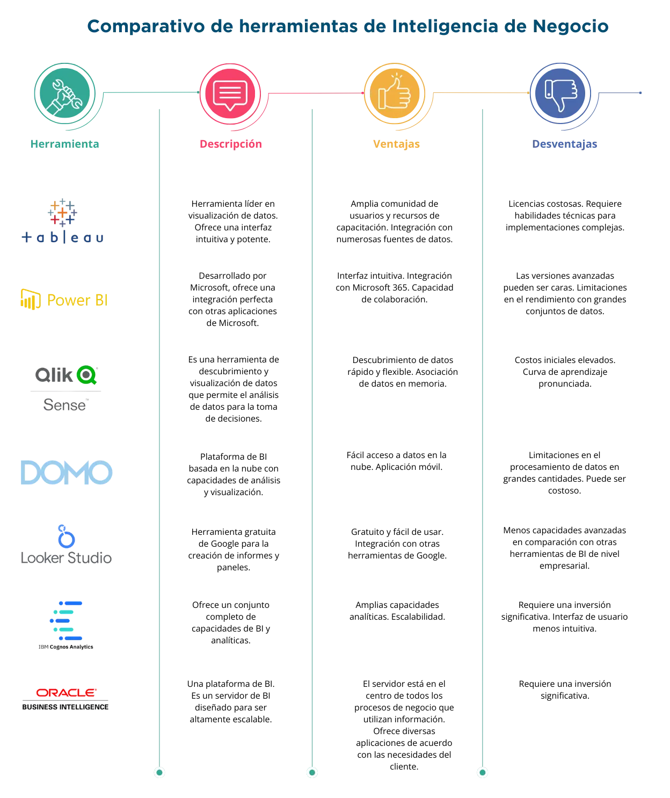
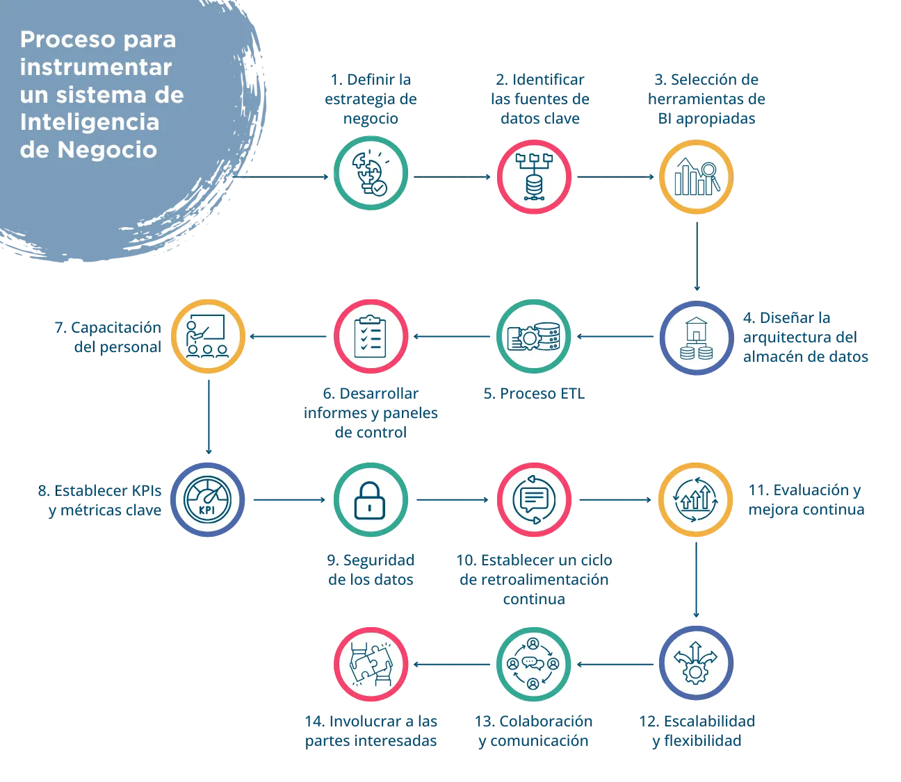

build Introducción
En la era digital en constante evolución, las pymes enfrentan un entorno empresarial altamente competitivo y desafiante. La toma de decisiones informada y estratégica se ha convertido en un componente vital para el éxito en este panorama en constante cambio. La Inteligencia de Negocio (Business Intelligence o BI, por sus siglas en inglés), emerge como una herramienta esencial que capacita a las empresas para comprender, analizar y aprovechar los datos en la búsqueda de ventajas competitivas.
La Inteligencia de Negocio va mucho más allá de la mera presentación de informes y estadísticas; implica la utilización de tecnologías, modelos analíticos y procesos eficaces para convertir datos en información que se transforme en conocimiento valioso.
En este contexto, el presente eje temático explora conceptos fundamentales, metodologías, herramientas y beneficios, examina cómo el BI ha transformado y continúa transformando a empresas de todos los tamaños y sectores. Desde las pymes hasta las corporaciones multinacionales, la BI se ha convertido en una palanca poderosa para la innovación, la eficiencia y el crecimiento sostenible.
La adopción de la Inteligencia de Negocio no se limita a un conjunto particular de industrias o tipos de empresas. Su versatilidad permite que las organizaciones optimicen operaciones, mejoren la satisfacción del cliente, anticipen tendencias de mercado, tomen decisiones financieras más sólidas y, en última instancia, obtengan una ventaja competitiva sólida. En un mundo en el que los datos fluyen a velocidades vertiginosas, la capacidad de extraer información crítica de manera oportuna y precisa es un imperativo estratégico.
Se presentan los componentes clave de la Inteligencia de Negocio, desde la adquisición y gestión de datos hasta la visualización de información y la toma de decisiones basada en datos. Además, se analizan casos de estudio de empresas que han alcanzado el éxito a través de la implementación efectiva de estrategias de BI. Al final, se tendrá una comprensión de la importancia y el impacto de la Inteligencia de Negocio en el entorno empresarial moderno, así como de cómo pueden aplicar estos conceptos a sus propias organizaciones para impulsar el crecimiento y la innovación.
En resumen, la Inteligencia de Negocio se erige como un faro en medio de la creciente tormenta de datos, ofreciendo a las organizaciones una brújula confiable para navegar en un mundo empresarial cada vez más complejo y competitivo.
troubleshoot ¿Qué es la inteligencia de negocio?
1 Inteligencia de Negocio
1.1 Definición
La Inteligencia de Negocio, también conocida como Business Intelligence (BI) por sus siglas en inglés, es un proceso que involucra la adquisición, almacenamiento, análisis y presentación de datos empresariales con el objetivo de facilitar la toma de decisiones informadas y estratégicas en una organización. La BI utiliza tecnologías y herramientas específicas para convertir datos en información significativa que ayuda a las empresas a mejorar su eficiencia operativa y a identificar oportunidades de crecimiento (Smith, 2018).
Permite brindar una visión del uso estratégico de los datos en la empresa y cómo, de manera correcta pueden convertirse en un insumo clave para la toma de decisiones en los niveles operativos, gerencial y directivo. Integra análisis de datos, identificación de patrones y tendencias y oportunidades que permiten a las pymes tomar decisiones informadas.
El objetivo principal de la inteligencia de negocios es proporcionar insights que ayuden a las organizaciones a comprender mejor su desempeño, identificar oportunidades y enfrentar desafíos.
2 ¿Cuál es el enfoque de la Inteligencia de Negocio?
Business Inteligencie (BI) es un enfoque integral que ha revolucionado la forma en que las organizaciones toman de decisiones y gestionan sus operaciones. En un entorno empresarial cada vez más complejo y competitivo, la Inteligencia de Negocio se ha convertido en una herramienta esencial para aquellos que buscan no solo sobrevivir sino prosperar. Este enfoque se ha desarrollado a lo largo de décadas, y su importancia ha ido en aumento a medida que las empresas tienen acceso a una mayor cantidad de datos en forma sistematizada y buscan formas más efectivas de utilizarlos para obtener una ventaja competitiva.
La definición de la Inteligencia de Negocio es esencial para comprender su propósito y valor. En términos generales se refiere al conjunto de herramientas, tecnologías y procesos que permiten recopilar, organizar, analizar y presentar datos e información para facilitar la toma de decisiones.
El término "inteligencia de negocios" se popularizó a partir de la década de 1990, aunque sus raíces se pueden rastrear hasta décadas anteriores. Fue Howard (Dresner, 1990), un analista de Gartner Group, quien acuñó el término por primera vez a principios de la década de 1990, definiéndolo como "conceptos y métodos para mejorar la toma de decisiones en negocios usando sistemas de apoyo basados en hechos”.Este fue un momento crucial en la evolución de la BI, al marcar la pauta y reconocimiento de que las organizaciones podían utilizar datos de manera más efectiva para tomar decisiones fundamentadas.
La importancia de la Inteligencia de Negocio radica en su capacidad para convertir datos aparentemente dispares y crudos en información valiosa. La información es lo que impulsa las decisiones empresariales efectivas. A través de la BI, las organizaciones pueden transformar datos en análisis que pueden utilizarse para identificar tendencias, patrones y oportunidades en sus operaciones.
3 ¿Por qué es útil la Inteligencia de Negocio?
La Inteligencia de Negocio permite que las pymes puedan explotar los datos que tienen dentro de sus fuentes internas y externas, lo cual facilita la identificación de patrones y tendencias, así como la detección de oportunidades, que son elementos fundamentales para que las pequeñas y medianas empresas tomen decisiones informadas y basadas en datos.
Las herramientas de Inteligencia de Negocio permiten a las organizaciones recopilar y almacenar datos históricos sobre sus operaciones, ventas, clientes, inventarios, entre otros. Al analizar estos datos, es posible identificar tendencias y patrones a lo largo del tiempo, incluso se pueden crear modelos predictivos basados en algoritmos.
Con dichos modelos se pueden identificar tendencias futuras en función de datos históricos, lo que es útil para prever la demanda, optimizar operaciones o anticipar problemas, además, puede ayudar a identificar nuevas oportunidades de crecimiento, por ejemplo, al analizar datos de mercado, competidores y cambios en las preferencias del consumidor, se pueden identificar áreas no atendidas o nichos de mercado emergentes en los que pueda expandir.
De igual forma el análisis de la información puede ayudar a las pymes a evaluar y gestionar los riesgos financieros, operativos y de mercado. Esto les permite tomar medidas para mitigar los riesgos y estar mejor preparados para afrontar situaciones adversas.
Al incorporar técnicas de minería de datos se pueden observar patrones ocultos en los conjuntos de datos, los que podría ser difícil de detectar mediante el simple examen de los datos brutos, pero pueden ser reveladores en términos de tendencias y relaciones.
El análisis de datos también puede ayudar a optimizar las operaciones. Mediante el seguimiento de métricas clave, como la eficiencia de la producción o la gestión del inventario, se pueden identificar áreas de mejora y tomar medidas para aumentar la eficiencia y reducir costos.
Utilizando los indicadores de negocio es posible medir y evaluar el rendimiento de las estrategias y por ende la conveniencia de mantenerlas o ajustarlas con relación a lo que está funcionando correctamente y lo que no, para la mejora continua.
A través de estas herramientas se facilita la visualización de datos, como gráficos, tablas dinámicas y paneles de control interactivos. Estas representaciones visuales ayudan a los analistas y tomadores de decisiones a identificar tendencias de manera más efectiva y a comprender mejor los datos.
La inteligencia de negocio es una herramienta poderosa para identificar tendencias y patrones en los datos empresariales, lo que ayuda a las organizaciones a tomar decisiones informadas y estratégicas. Como bien dijo Bernard Liautaud, fundador de Business Objects, una empresa líder en BI: "Business Intelligence es sobre proporcionar la información adecuada en el momento adecuado a las personas adecuadas para que puedan tomar decisiones informadas", en un ambiente en continuo cambio.
4 Visión del uso estratégico de los datos en la empresa

5 ¿Cómo funciona la Inteligencia de Negocio?
A partir de las fuentes de información que pueden ser internas como los datos de un ERP, archivos de tipo texto, hojas de cálculo, entre otros, o datos externos como los que brindan las redes sociales, se extrae, transforma y carga la información a partir de procesos de ETL.
6 ¿Cómo definir un sistema de Inteligencia de Negocio?
Definir un sistema de Inteligencia de Negocio (Business Intelligence, BI) implica considerar las necesidades específicas, los recursos disponibles y los objetivos comerciales de la empresa.
La puesta en operación de un sistema de Inteligencia de Negocio en las pymes es un proceso que requiere planificación estratégica, inversión de recursos, capacitación de empleados, gestión del cambio, una cultura orientada a los datos, pero sobre todo un liderazgo fuerte y convencido de la necesidad de la explotación de la información. Cuando se realiza de manera efectiva, puede brindar una ventaja competitiva al permitir una toma de decisiones más informadas y eficientes, lo que puede traducirse en un mejor rendimiento empresarial y un retorno de la inversión a largo plazo.
La implementación de la inteligencia de negocios en una pequeña o mediana empresa es un proceso valioso para la toma de decisiones informadas. A continuación, se presentan algunos pasos y consideraciones clave para definir un sistema de BI en una empresa.
Antes de seleccionar y definir un sistema de BI, es crucial comprender las necesidades específicas de la empresa y los objetivos comerciales que se buscan alcanzar. Esto podría incluir mejorar la toma de decisiones, optimizar operaciones, comprender mejor a los clientes, entre otros.
En esta fase es esencial que la alta dirección y los equipos involucrados tengan definida la estrategia de negocio de la empresa. Esto implica entender claramente qué se quiere lograr, por ejemplo: definir mercados objetivo, mejorar la presencia digital, instrumentar políticas de costos y gastos, por citar algunos.
Antes de utilizar datos en un sistema de inteligencia de negocio, es fundamental identificar las fuentes donde se encuentran alojados, estas fuentes tienen diferente procedencia, pueden ser internar o externas.
Se deben determinar las fuentes de datos internas y externas que son críticas para la toma de decisiones. Esto podría incluir datos de ventas, finanzas, operaciones, marketing, entre otros. Habría que asegurarse de conocer la diversidad de formatos y ubicaciones de los datos.
6.2.1 Categorías de datos relevantes
6.2.2 Fuentes de datos internas
También es importante examinar las fuentes internas de datos dentro de la organización. Estas pueden incluir sistemas de gestión empresarial (ERP), sistemas de punto de venta (POS), bases de datos internas, hojas de cálculo, registros de clientes y cualquier otro lugar donde se capture información relacionada con las categorías identificadas.
6.2.3 Fuentes de datos externas
Es indispensable evaluar las fuentes externas de datos que podrían proporcionar información valiosa. Esto puede incluir datos de mercado, informes de la industria, datos económicos, datos demográficos y cualquier otra fuente externa que pueda enriquecer el análisis.
6.2.4 Evaluar la diversidad de formatos y ubicaciones
En esta fase es vital reconocer que los datos pueden estar en diferentes formatos y ubicaciones. Pueden ser datos estructurados en bases de datos, datos no estructurados en documentos o correos electrónicos, datos en la nube, en servidores locales, entre otros. Es importante comprender la variedad de formatos para planificar la integración.
6.2.5 Calidad de los datos
Una actividad trascendente es evaluar la calidad de los datos en cada fuente. La calidad de los datos se refiere a la precisión, integridad y consistencia de la información. Identificar y abordar posibles problemas de calidad de datos es esencial para obtener resultados precisos.
6.2.6 Priorizar fuentes críticas
Para obtener mejores resultados, se deben priorizar las fuentes de datos en función de su importancia para la toma de decisiones. Algunas fuentes pueden ser críticas y requerir una atención especial debido a su impacto directo en los resultados comerciales.
Identificar los datos estratégicos críticos, por ejemplo, si una empresa está en expansión del mercado, los datos de ventas por región, la retención de clientes y el rendimiento de campañas de marketing, pueden ser estratégicos.
También es importante analizar cómo cada fuente de datos impacta las decisiones clave de la empresa, por ejemplo, en una empresa de comercio electrónico, los datos del inventario pueden ser críticos para la toma de decisiones diarias, mientras que los datos de análisis de clientes pueden ser fundamentales para decisiones estratégicas de marketing y desarrollo de productos.
Hay que considerar que algunos datos pueden ser críticos debido a los requisitos regulatorios, por tanto, hay que asegurarse de priorizar los datos que estén sujetos a regulaciones específicas y que su manejo cupla con los estándares legales requeridos. Un ejemplo se observa en el sector salud, donde los datos de los pacientes están sujetos a regulaciones estrictas de privacidad y seguridad.
Un ejercicio valioso en el proceso de priorizar los datos es analizar el costo-beneficio. Es indispensable evaluar el costo de recopilar, almacenar y procesar cada conjunto de datos en comparación con los beneficios derivados de su uso. Por ejemplo, una pyme con recursos limitados podría priorizar datos que ofrecen un retorno significativo de inversión comparado con aquellos que afectan directamente a la rentabilidad.
Para la priorización de datos es recomendable involucrar a los equipos departamentales para entender sus necesidades y prioridades, esto asegura que los datos seleccionados sean relevantes y útiles para todas las partes interesadas.
Adicionalmente hay que establecer niveles de acceso y seguridad diferenciados según la importancia de los datos. Por ejemplo, los informes financieros detallados requieren de un acceso limitado solo para ciertos miembros del equipo financiero y de la alta dirección.
Priorizar los datos de esta manera permite a la empresa concentrar sus recursos y esfuerzos en la recopilación, procesamiento y análisis de la información que tiene mayor impacto en la toma de decisiones.
6.2.7 Analizar Requisitos de Integración
En esta fase de análisis y requisitos hay que considerar cómo se pueden integrar los datos de diversas fuentes, para lo cual deberás plantearte preguntas importantes como las siguientes:
¿Necesitarás un proceso ETL para la integración de datos?
¿Las fuentes de datos están en formatos compatibles?
¿Cómo manejarás la actualización y sincronización de datos?
Por ejemplo, una pyme tiene datos de ventas almacenados en una base de datos SQL y datos de marketing almacenados en hojas de cálculo de Google Sheets. Las claves de integración podrían ser identificadores de productos y clientes. Un proceso ETL podría extraer datos de ambas fuentes, transformarlos para asegurar la coherencia en la nomenclatura y formato, y cargarlos en un almacén de datos centralizado para su análisis conjunto.
Este proceso de análisis es fundamental para asegurar que la información recopilada desde diversas fuentes sea coherente, precisa y útil para la toma de decisiones.
6.2.8 Considerar aspectos legales y de privacidad
Al recopilar y utilizar la información, hay que estar atentos al cumplimiento de las disposiciones legales en cuanto a regulaciones y leyes de privacidad de datos. Esto es especialmente crítico cuando se trata de datos de clientes y empleados.
Cada país o región tiene disposiciones legales aplicables, a continuación, se detallan algunas disposiciones más conocidas:
Reglamento General de Protección de Datos (RGPD): Aplicable en la Unión Europea y que afecta a cualquier entidad que maneje datos de ciudadanos de la Unión Europea. El Reglamento es una medida esencial para fortalecer los derechos fundamentales de las personas en la era digital y facilitar la actividad económica, ya que aclara las normas aplicables a las empresas y los organismos públicos en el mercado único digital.
Ley de Privacidad del Consumidor de California (CCPA): Aplicable a empresas que recopilan datos de residentes de California, USA. Se engloba en el ámbito de la privacidad de los datos y ofrece a los consumidores de California medidas para proteger su privacidad, entre las que se incluye el derecho a acceder, eliminar y rechazar la venta de su información personal.
Ley de Derechos de Privacidad de la California de California (CPRA) es una ley de privacidad de datos que modifica y amplía la CCPA.
Ley de Protección de la Privacidad de Menores en Internet (COPPA): Aplicable a la recopilación de datos de niños menores de 13 años en los Estados Unidos, entre otras regulaciones.
En El Salvador destacan la Ley de protección de datos personales; la Ley de Acceso a la Información Pública, la Ley de Firma Electrónica y la Ley Especial contra los Delitos Informáticos y Conexos, que hacen entender las fronteras entre privacidad, uso de datos personales y propiedad de estos.
En Colombia la Ley 1581 de 2012, regula el tratamiento de datos personales efectuado en territorio colombiano o cuando el responsable del tratamiento o encargado del tratamiento no establecido en territorio colombiano le sea aplicable la legislación colombiana en virtud de normas y tratados internacionales.
En Uruguay está la Ley No. 18,331 que reconoce el derecho a controlar el uso que se hace de los datos personales. Tanto en el ámbito privado como en el público.
6.2.9 Evaluar herramientas de extracción de datos
Para determinar el uso de herramientas de extracción de datos, previamente se deben identificar claramente los requisitos y objetivos de uso. Vale la pena plantearse las siguientes interrogantes:
¿Qué tipo de datos necesito extraer? ¿Con qué frecuencia? ¿Qué nivel de automatización se requiere? ¿Necesito un soporte para datos estructurados o no estructurados?
Al responder a estas interrogantes se tendrán los insumos necesarios para la búsqueda de herramientas que faciliten la extracción de datos desde diversas fuentes.
En este proceso de evaluación de herramientas es importante considerar la compatibilidad y el rendimiento de las fuentes de datos; la facilidad de uso, la capacidad de automatización de la herramienta, las posibilidades que brinda para la transformación de datos, su escalabilidad, lo que implica manejar volúmenes crecientes de datos a medida que la empresa crece; características de seguridad y privacidad de los datos; integración con otras herramientas; costos (costo total de la propiedad, tarifas de licencia, implementación, y mantenimiento), así como la disponibilidad de soporte técnico y documentación de consulta.
Algunas herramientas de ETL (Extracción, Transformación y Carga) pueden ser útiles para simplificar este proceso de evaluación. En el mercado existe diversidad de herramientas para su evaluación, todo dependerá de las necesidades de la empresa, de los recursos disponibles y del personal que pueda obtener el máximo provecho.
6.2.10 Documentar y mantener
Una actividad imprescindible es documentar claramente las fuentes de datos identificadas, su estructura, frecuencia de actualización y cualquier otro detalle relevante. Se debe mantener esta documentación actualizada a medida que evolucionan las necesidades de la empresa.
Al abordar estos pasos, se estará mejor preparado para establecer una sólida base de datos para un sistema de Inteligencia de Negocio, lo que permitirá tomar decisiones informadas basadas en una comprensión profunda de los datos clave para la empresa.
Evaluar y seleccionar herramientas de BI que se ajusten al tamaño y presupuesto de la pyme. Hay opciones diseñadas específicamente para pymes, como Microsoft Power BI, Tableau Public, Google Data Studio y otras herramientas basadas en la nube.
La elección de la herramienta es crucial. Las pymes pueden optar por soluciones locales (instaladas en sus servidores) o basadas en la nube (alojadas en servidores externos). La decisión dependerá de las necesidades específicas de la empresa, el presupuesto y la capacidad de mantenimiento.
A continuación, se presenta como referencia una tabla con un análisis de ventajas y desventajas de las herramientas más relevantes de Inteligencia de Negocio.
Si todavía la empresa no tiene un almacén de datos, habría que considerar el diseño de una arquitectura simple y escalable. Una opción es identificar soluciones en la nube para facilitar la gestión y escalabilidad sin la necesidad de inversiones significativas en infraestructura.
Un modelo de datos sólido es esencial para estructurar y relacionar los datos en el sistema de inteligencia de negocio. Esto implica definir cómo se organizan los datos y las relaciones entre ellos, lo que facilitará la generación de informes y análisis significativos.
Aquí un caso práctico: Si una empresa desea diseñar un almacén de datos para analizar el rendimiento de ventas. Se identifican las fuentes de datos relevantes, como bases de datos de ventas, registros de clientes y datos de inventario. Se selecciona una solución en la nube para escalabilidad y se establecen procesos ETL para cargar datos diariamente. La arquitectura incluye capas ETL, almacén de datos y una interfaz de presentación para informes y visualizaciones. Se implementan medidas de seguridad para proteger la información de clientes y se integran herramientas de análisis para que los usuarios puedan explorar los datos de manera efectiva.
Este enfoque estructurado y planificado contribuirá a estructurar un almacén de datos efectivo que respalde las necesidades analíticas de la empresa.
Implementar un proceso ETL (Extracción, Transformación y Carga) para preparar y cargar datos desde diversas fuentes hacia el almacén de datos. Esto garantiza la consistencia y calidad de los datos para el análisis.
Extracción: para este paso hay que recopilar los datos desde diversidad de fuentes como archivos, servicios web, hojas de cálculo, entre otros. Además de identificar las fuentes se deben establecer conexiones para acceder a esas fuentes y extraer los datos relevantes. Se pueden diseñar estrategias de extracción incremental lo cual reduce el tiempo y los recursos.
Transformación: el paso inicial para este momento es realizar la limpieza de los datos, identificar los datos incorrectos, incompletos o inconsistentes. Se pueden aplicar reglas de lógica de negocio según los requisitos del almacén. Detectar y eliminar los datos duplicados y normalizar los datos para garantizar la coherencia y estandarización.
Carga: los datos transformados y validados deben insertarse en el almacén de datos garantizando su disponibilidad para su análisis. Aquí es importante definir la estructura del almacén de datos que incluya tablas, relaciones y esquemas.
Cada fase del proceso requiere realizar pruebas que permitan garantizar la calidad y precisión de los datos.
Crear informes y paneles de control que proporcionen información clave para la toma de decisiones. Estos informes deben ser accesibles y comprensibles para usuarios no técnicos dentro de la organización.
Para la generación de informes se deben comprender las necesidades y expectativas de los usuarios, para ello se deberán identificar los indicadores clave y los requisitos específicos.
Vale establecer los objetivos que se persiguen con la presentación del informe, definir si es para un monitoreo en tiempo real, un análisis histórico o para la toma de decisiones, de esa manera se tendrán elementos para elegir la herramienta de visualización que mejor se adapte a las necesidades. Como se ha mencionado, algunas opciones son: Tableau, Power BI, Google Data Studio y otras herramientas de Business Intelligence.
Es importante que el personal esté capacitado para utilizar eficazmente las herramientas. Esto incluye la comprensión de conceptos como cuadros de mando, informes, análisis de datos y la capacidad de interpretar los resultados para tomar decisiones informadas.
Proporcionar capacitación a los empleados para que puedan utilizar las herramientas de BI de manera efectiva. Esto incluye la interpretación de informes, la creación de visualizaciones y la toma de decisiones basada en datos.
Lo más importante es involucrar al personal en el uso de las herramientas y en una nueva cultura de manejo de datos. Se pueden organizar sesiones de capacitación presenciales o virtuales que cubran desde la introducción básica hasta casos de uso avanzados y relevantes para cada área o departamento.
Vale la pena facilitar el acceso a entornos de prueba y fomentar la colaboración entre los participantes para facilitar el intercambio de experiencias y plantear inquietudes o dudas, el propósito es lograr que el personal asimile una nueva forma de trabajar y adquirir las competencias relevantes.
Identificar los indicadores clave de rendimiento (KPIs) y métricas relevantes para la empresa. Estos serán la base para los informes y análisis, ayudando a evaluar el rendimiento y el progreso hacia los objetivos comerciales.
Para la identificación de los KPIs se deberán realizar reuniones y talleres con los diferentes equipos y áreas, incluyendo líderes del negocio, esto ayudará a determinar las áreas críticas para el monitoreo.
Las áreas clave que impactan directamente en el éxito del negocio, pueden ser ventas, satisfacción del cliente, eficiencia operativa, por citar algunos. Estas áreas deben tener sus puntos de medición y con ello definir las métricas y KPIs importantes.
También es recomendable realizar un ejercicio de benchmarking con respecto al sector en el que se ubica el negocio. Es importante comprender cómo se desempeña la empresa en comparación con los competidores, esto ayuda a identificar KPIs relevantes.
La seguridad de datos es crucial para proteger la información empresarial confidencial. Implementar medidas de seguridad para proteger la integridad y confidencialidad de los datos utilizados en el análisis. Esto es especialmente importante al trabajar con datos sensibles de clientes y de la empresa.
Habría que iniciar con una evaluación de riesgos para identificar posibles amenazas y vulnerabilidades; establecer una política de seguridad de datos que defina las prácticas y procedimientos de seguridad; implementar el cifrado de datos para proteger la información confidencial, tanto en reposo como en tránsito; establecer controles de acceso; instrumentar sistemas de monitoreo y auditoría para rastrear el acceso a los datos; mantener sistemas y software actualizado; implementar estrategias de respaldo y copias de seguridad y recuperación de datos; concientizar al personal sobre buenas prácticas de seguridad de datos, son acciones recomendables para la seguridad de los datos.
La implementación de BI es un proceso continuo. La implementación de las herramientas de inteligencia de negocio es un proceso continuo. El sistema debe mantenerse actualizado y adaptarse a medida que cambian las necesidades de la empresa. Esto implica la incorporación de nuevas fuentes de datos, la optimización de informes y análisis, y la corrección de posibles problemas
Establecer un ciclo de retroalimentación para revisar regularmente los informes, ajustar estrategias según sea necesario y asegurar que la información siga siendo relevante, es un proceso imprescindible.
En todo proceso y sistema de BI es importante evaluar el rendimiento del sistema para buscar oportunidades de mejora continua. Esto puede incluir la incorporación de nuevas fuentes de datos, la expansión de la capacidad analítica y la adaptación a cambios en las necesidades comerciales.
Para los sistemas BI es fundamental buscar su escalabilidad y flexibilidad en un determinado periodo, esto con la finalidad de adaptarse al crecimiento de la empresa y a cambios en los requisitos de análisis.
Diseñar una arquitectura escalable horizontal y verticalmente es un buen paso. También la adopción de soluciones en la nube permite la escalabilidad automática, plataformas como AWS, Azure y Google Cloud ofrecen opciones interesantes para implementaciones escalables.
Fomentar la colaboración y la comunicación entre los equipos utilizando la información proporcionada por el sistema de BI. Esto ayuda a alinear a la organización hacia objetivos comunes.
Entre las estrategias de fomento a la colaboración y comunicación, está asegurarse de que todos los usuarios comprenden cómo el sistema de BI contribuye a los objetivos empresariales.
Se debe facilitar el acceso a la información, proporcionar capacitación continua respecto al uso de las herramientas; fomentar la autoexplotación de los datos; permitir a los usuarios realizar consultas y análisis por sí mismos; uso de herramientas colaborativas, generar espacios para compartir mejores prácticas; fomentar la creación de comunidades de usuarios, grupos o foros para el intercambio de ideas, además de integrar herramientas de colaboración empresarial como Slack, Microsoft Teams o plataformas similares.
Finalmente, es indispensable asegurarse de la participación de las partes interesadas clave en el proceso, desde los líderes ejecutivos hasta los usuarios finales. La aceptación y el entendimiento de la importancia de BI son esenciales para el éxito.
Al seguir estos pasos y consideraciones, una pyme puede establecer un sistema de BI que se ajuste a sus necesidades y contribuya a una toma de decisiones más informada y estratégica.
El uso y explotación de los datos mediante las herramientas de inteligencia de negocios es muy benéfica para las pequeñas y medianas empresas ya que en general les permite fortalecer su presencia en el mercado, verificar el desempeño operativo y financiero, así como el resultado de estrategias, entre otros.
En resumen, la inteligencia de negocio en una pyme tiene como objetivo ayudar a la empresa a ser más competitiva, eficiente y orientada a datos, lo que a su vez puede llevar a un crecimiento sostenible y a una toma de decisiones más acertada.
Referencias
Aguilar, L. J. (2019). Inteligencia de negocios y analítica de datos: Una visión global de Business Intelligence & Analytics. Alpha Editorial.
Davenport, T. H. (2007). Competing on analytics: The new science of winning. Harvard Business Press.
Dosdoce.com. (2014). Nuevos modelos de negocio en la era digital. España: CEDRO. Recuperado de http://www.dosdoce.com/upload/ficheros/noticias/201409/modelos_de_negocio_pdf.pdf
Dresner, H. (1990). Business Intelligence: An Emerging Hot Topic. Gartner Group.
Few, S. ( 2006). Information Dashboard Design: The Effective Visual Communication of Data. . O'Reilly MediaIn.
Hair, J. F. (2019). Multivariate Data Analysis . (8th ed.). Cengage Learning.
Han, J. K. (2011). Data Mining: Concepts and Techniques. . Morgan Kaufmann.
Inmon, W. H. (2003). Corporate Information Factory. Wiley. Wiley.
Kimball, R. R. (2008). The Data Warehouse Lifecycle Toolkit. . John Wiley & Sons.
Laudon, K. C. (2016). Management Information Systems: Managing the Digital Firm. Pearson.
McAfee, A. &. (2012). Big data: The management revolution. (Vol. 90(10). Harvard Business Review, .
Smith, J. (2018). Introducción a la inteligencia de negocios. Editorial ABC.
loyalty Beneficios
account_tree Proceso

La incorporación exitosa de la inteligencia de negocios implica un enfoque holístico que abarca desde la estrategia empresarial y la evaluación constante. Cada paso es fundamental para garantizar que la inteligencia de negocio sea una herramienta efectiva para la toma de decisiones.